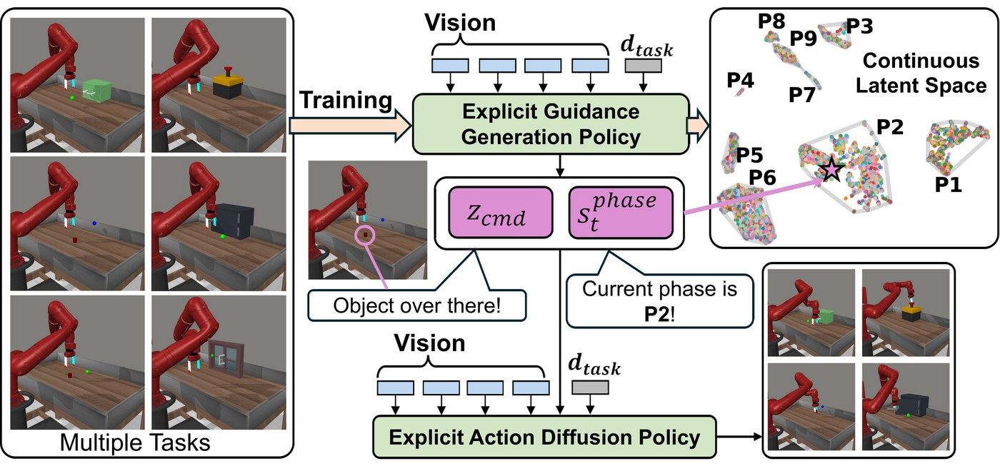
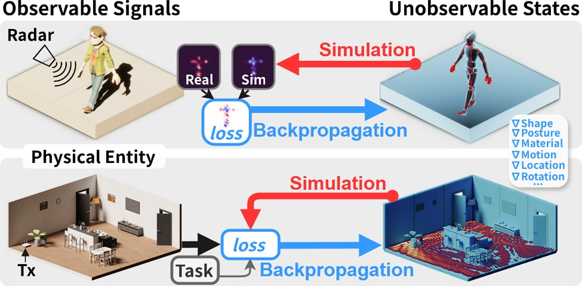
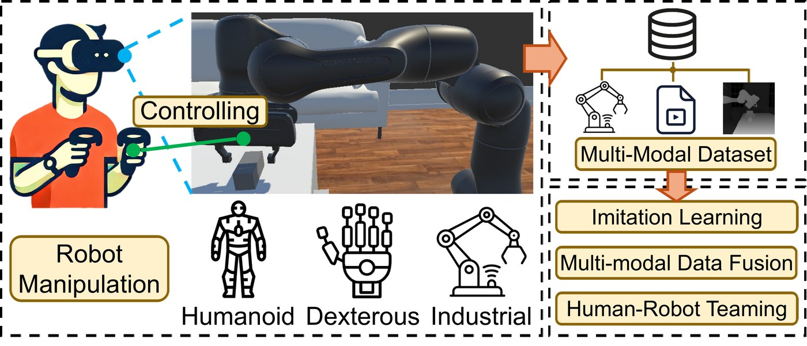

Xinmin Fang 方新民
Ph.D. Student in Computer Science & Information Systems
College of Engineering, Design and Computing
University of Colorado Denver (CU Denver)
Advisor: Prof. Zhengxiong Li
Ph.D. Student in Computer Science & Information Systems
College of Engineering, Design and Computing
University of Colorado Denver (CU Denver)
Advisor: Prof. Zhengxiong Li
I am a third year Ph.D. student in Computer Science & Information Systems at the College of Engineering, Design and Computing, University of Colorado Denver (CU Denver), advised by Prof. Zhengxiong Li.
My research aims to build robots that manipulate the physical world reliably. I work on dexterous manipulation, particularly visuo-tactile foundation models and vision-language-action (VLA) models. Such models depend on large-scale interaction data, so I also build the systems that produce it, including VR-based teleoperation.


IEEE/RSJ International Conference on Intelligent Robots and Systems (IROS'26)

IEEE/RSJ International Conference on Intelligent Robots and Systems (IROS'26)
IEEE/RSJ International Conference on Intelligent Robots and Systems (IROS'26)
IEEE/RSJ International Conference on Intelligent Robots and Systems (IROS'26)

ACM Conference on Mobile Computing And Networking (MobiCom'26)
ACM Proceedings of the 2nd International Workshop on Security and Privacy of Sensing Systems (Sensors S&P'25)

IEEE/RSJ International Conference on Intelligent Robots and Systems (IROS'25)

IEEE/RSJ International Conference on Intelligent Robots and Systems (IROS'25)

ACM International Conference on Mobile Systems, Applications, and Services (MobiSys'25) (*Co-first author)
ACM Conference on Embedded Networked Sensor Systems (SenSys'25)

ACM Conference on Mobile Computing And Networking (MobiCom'24) (*Co-first author) (Workshop)

ACM Conference on Embedded Networked Sensor Systems (SenSys'21) (*Co-first author)

ACM Conference on Embedded Networked Sensor Systems (SenSys'21)
An open-source autonomous agent system for long-running research projects. Given a mission and a success criterion, Cortex plans the work, dispatches pipelines of agents to execute it, keeps a structured log of progress in the repository, and reviews itself before each commit — across days or weeks of unattended work.
A real-time AI model status monitoring platform with intelligent routing SDK and local gateway proxy, helping developers and AI agents navigate the rapidly evolving AI infrastructure landscape.
route("Hello", model="claude-sonnet-4-6")), automatic provider discovery from environment variables, tier-based model fallback, and cost calculationA novel framework enabling users to generate virtual robotic scenarios, collect training data, and train Vision-Language-Action (VLA) models through natural language prompts alone.
A pioneering initiative dedicated to advancing robotics, AI, and cybersecurity, with a focus on developing intelligent and secure robotic systems.
One of the first few solutions of Steam multiplayer networking for Unity. Used by commercial games such as RUSSIA BATTLEGROUNDS, a battle royale game supporting up to 32 players at the same time.